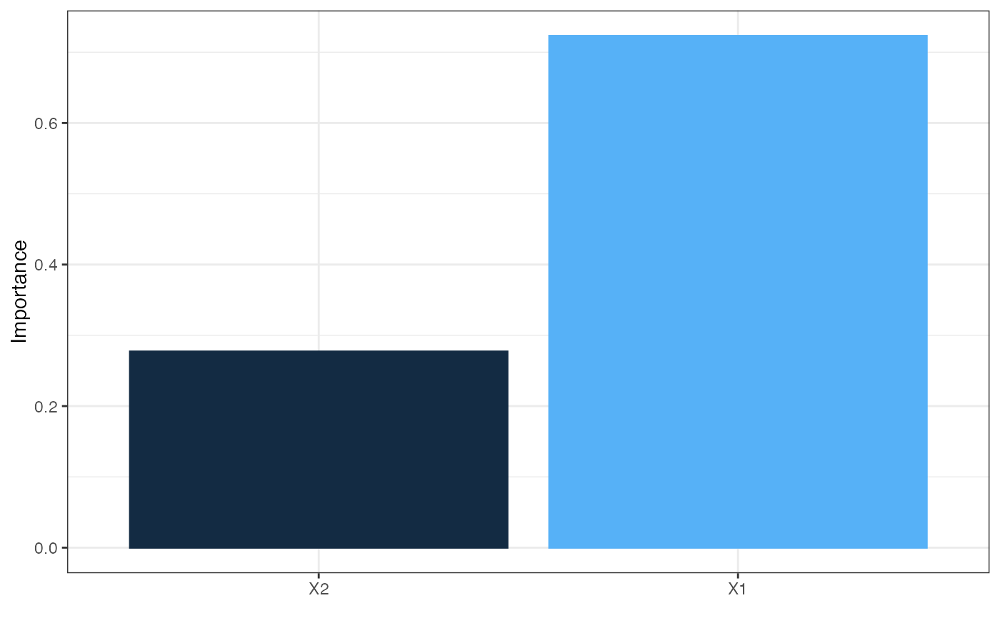
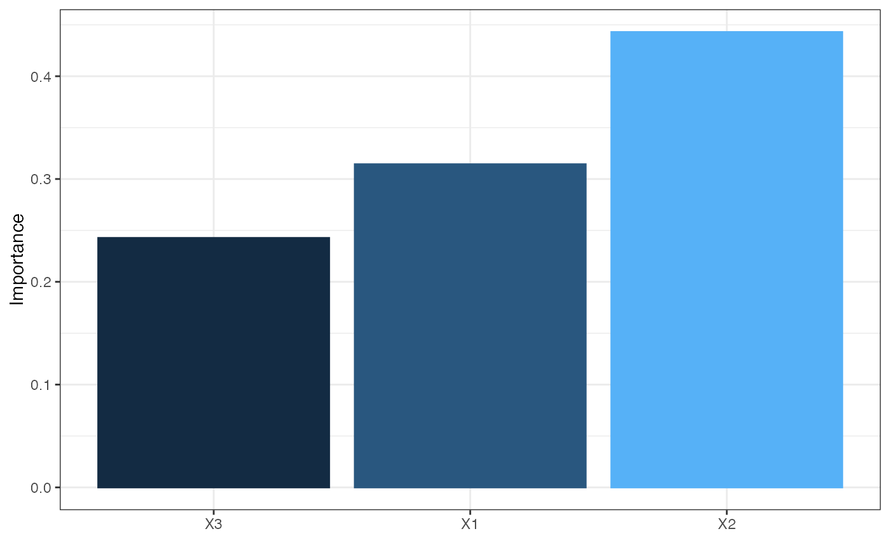

Relative importance of input variables in neural networks using Garson's algorithm
garson(mod_in, ...) # S3 method for default garson( mod_in, x_names, y_names, bar_plot = TRUE, x_lab = NULL, y_lab = NULL, ... ) # S3 method for numeric garson(mod_in, struct, ...) # S3 method for nnet garson(mod_in, ...) # S3 method for mlp garson(mod_in, ...) # S3 method for nn garson(mod_in, ...) # S3 method for train garson(mod_in, ...)
| mod_in | input model object or a list of model weights as returned from |
|---|---|
| ... | arguments passed to other methods |
| x_names | chr string of input variable names, obtained from the model object |
| y_names | chr string of response variable names, obtained from the model object |
| bar_plot | logical indicating if a |
| x_lab | chr string of alternative names to be used for explanatory variables in the figure, default is taken from |
| y_lab | chr string of alternative name to be used for the y-axis in the figure |
| struct | numeric vector equal in length to the number of layers in the network. Each number indicates the number of nodes in each layer starting with the input and ending with the output. An arbitrary number of hidden layers can be included. |
A ggplot object for plotting if bar_plot = FALSE, otherwise a data.frame of relative importance values for each input variable. The default aesthetics for ggplot can be further modified, as shown with the examples.
The weights that connect variables in a neural network are partially analogous to parameter coefficients in a standard regression model and can be used to describe relationships between variables. The weights dictate the relative influence of information that is processed in the network such that input variables that are not relevant in their correlation with a response variable are suppressed by the weights. The opposite effect is seen for weights assigned to explanatory variables that have strong positive or negative associations with a response variable. An obvious difference between a neural network and a regression model is that the number of weights is excessive in the former case. This characteristic is advantageous in that it makes neural networks very flexible for modeling non-linear functions with multiple interactions, although interpretation of the effects of specific variables is of course challenging.
A method described in Garson 1991 (also see Goh 1995) identifies the relative importance of explanatory variables for a single response variables in a supervised neural network by deconstructing the model weights. The relative importance (or strength of association) of a specific explanatory variable for the response variable can be determined by identifying all weighted connections between the nodes of interest. That is, all weights connecting the specific input node that pass through the hidden layer to the response variable are identified. This is repeated for all other explanatory variables until a list of all weights that are specific to each input variable is obtained. The connections are tallied for each input node and scaled relative to all other inputs. A single value is obtained for each explanatory variable that describes the relationship with the response variable in the model (see the appendix in Goh 1995 for a more detailed description). The original algorithm indicates relative importance as the absolute magnitude from zero to one such the direction of the response cannot be determined.
Misleading results may be produced if the neural network was created with a skip-layer using skip = TRUE with the nnet or train functions. Garson's algorithm does not describe the effects of skip layer connections on estimates of variable importance. As such, these values are removed prior to estimating variable importance.
The algorithm currently only works for neural networks with one hidden layer and one response variable.
Beck, M.W. 2018. NeuralNetTools: Visualization and Analysis Tools for Neural Networks. Journal of Statistical Software. 85(11):1-20.
Garson, G.D. 1991. Interpreting neural network connection weights. Artificial Intelligence Expert. 6(4):46-51.
Goh, A.T.C. 1995. Back-propagation neural networks for modeling complex systems. Artificial Intelligence in Engineering. 9(3):143-151.
Olden, J.D., Jackson, D.A. 2002. Illuminating the 'black-box': a randomization approach for understanding variable contributions in artificial neural networks. Ecological Modelling. 154:135-150.
Olden, J.D., Joy, M.K., Death, R.G. 2004. An accurate comparison of methods for quantifying variable importance in artificial neural networks using simulated data. Ecological Modelling. 178:389-397.
olden for a more flexible approach for variable importance
## using numeric input wts_in <- c(13.12, 1.49, 0.16, -0.11, -0.19, -0.16, 0.56, -0.52, 0.81) struct <- c(2, 2, 1) #two inputs, two hidden, one output garson(wts_in, struct)## using nnet library(nnet) data(neuraldat) set.seed(123) mod <- nnet(Y1 ~ X1 + X2 + X3, data = neuraldat, size = 5)#> # weights: 26 #> initial value 259.012592 #> iter 10 value 0.986480 #> iter 20 value 0.225311 #> iter 30 value 0.139585 #> iter 40 value 0.098961 #> iter 50 value 0.038200 #> iter 60 value 0.022839 #> iter 70 value 0.013774 #> iter 80 value 0.008530 #> iter 90 value 0.005172 #> iter 100 value 0.003044 #> final value 0.003044 #> stopped after 100 iterationsgarson(mod)if (FALSE) { ## using RSNNS, no bias layers library(RSNNS) x <- neuraldat[, c('X1', 'X2', 'X3')] y <- neuraldat[, 'Y1'] mod <- mlp(x, y, size = 5) garson(mod) ## using neuralnet library(neuralnet) mod <- neuralnet(Y1 ~ X1 + X2 + X3, data = neuraldat, hidden = 5) garson(mod) ## using caret library(caret) mod <- train(Y1 ~ X1 + X2 + X3, method = 'nnet', data = neuraldat, linout = TRUE) garson(mod) ## modify the plot using ggplot2 syntax library(ggplot2) mod <- nnet(Y1 ~ X1 + X2 + X3, data = neuraldat, size = 5) cols <- heat.colors(10) garson(mod) + scale_y_continuous('Rel. Importance', limits = c(-1, 1)) + scale_fill_gradientn(colours = cols) + scale_colour_gradientn(colours = cols) }